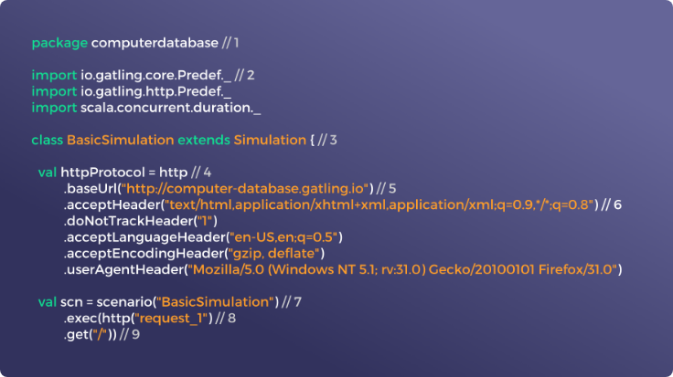
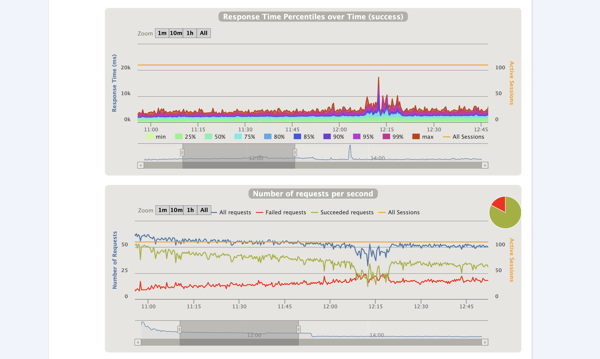
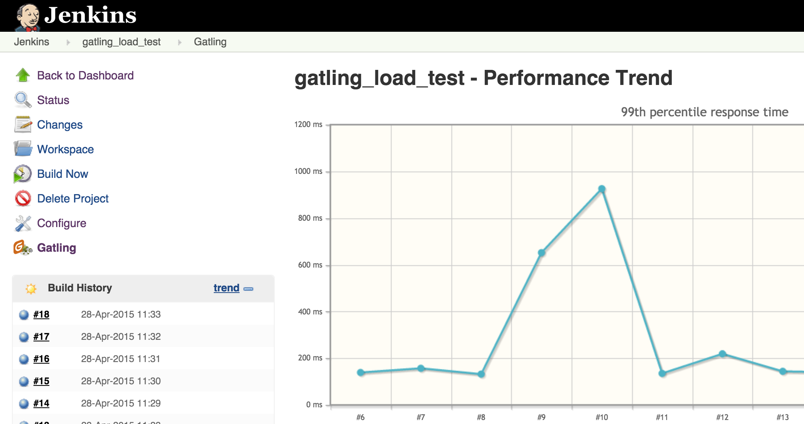

初识 Gatling
Gatling 是什么？
Gatling 是一个强大的开源的负载测试解决方案。
Gatling 专为持续负载测试设计，并与你的开发流程集成。它包括一个网络记录器和丰富多彩的报告。
|
编写你的测试场景，自动化你的测试 Gatling 的类代码脚本使你可以轻松维护你的测试场景，并且在你的持续交付流程中无缝地自动化它们。Gatling 开发了自己的领域特定语言(DSL)，以增加测试场景的可读性，你可以选择 Scala，Java 或 Kotlin。 |
 |
|  |
分析和调查应用程序的瓶颈 Gatling 是一个强大的工具:只需几台机器，就可以在web应用程序上模拟每秒数十万个请求，并获得高精度的指标。在测试结束时，Gatling 会自动生成一个详尽、动态和丰富多彩的报告。均值和平均数据是不够的：使用Gatling，可以得到响应时间分布的正确百分位数 —— 不要把最慢的用户甩在后面！ |
|
Gatling 和持续负载测试 借助 Jenkins 自动化你的负载测试活动并更快地交付！你可以在每次提交后监控性能回归。持续负载测试补充了大规模性能测试活动，它是持续交付流程的重要组成部分。在开发周期的前期运行小规模的定期测试可以减轻周期结束时调试阶段的压力。 时间、质量、成本：持续负载测试可以帮助你更好更快地改进 Web 应用程序。 |
 |
使用 Gatling 的两种方式
将 Gatling 作为独立的工具使用：下载 Gatling’s bundle
或者将 Gatling 作为依赖引入你的项目：
Gatling 企业版
Gatling Enterprise 是 Gatling 的官方组织版本，提供 Gatling 的管理界面。Gatling Enterprise 包括用于集成和自动化的高级指标和高级功能。

总结
Gatling 是一款开源的负载测试解决方案，帮助你解决网络站点和网络应用程序的性能问题。
Gatling 为 DevOps 和 CI/CD 设计。
如何使用 Gatling ？编写你的测试场景或使用我们的记录器，定义你想要模拟的虚拟用户的数量，并测试你的应用。
Gatling 提供非常细节和相关的数据以发现系统的性能瓶颈，并优化响应时间。
然后？进行迭代！因为性能峰值是你成功的关键。